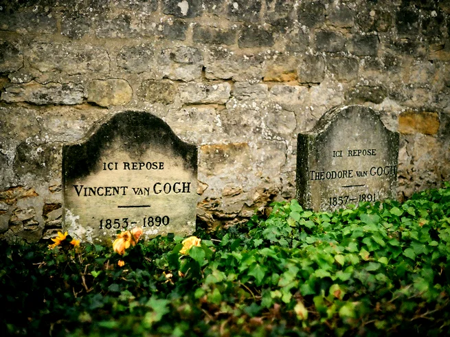

Em maio de 1890, Vincent van Gogh deixou o asilo psiquiátrico de Saint-Rémy buscando um recomeço em Auvers-sur-Oise. Embora tenha vivido um período intensamente produtivo na nova vila, a calmaria durou pouco. Na tarde de 27 de julho, o artista caminhou até um campo de trigo — cenário que tantas vezes pintou — portando um revólver. De acordo com a narrativa consagrada por décadas por historiadores do Museu Van Gogh, Vincent atirou contra o próprio peito em meio a uma forte crise depressiva. Ele conseguiu cambalear de volta à pensão onde morava, a Auberge Ravoux, onde agonizou por cerca de 30 horas antes de partir, deixando como última frase ao irmão: "A tristeza durará para sempre".
Apesar de a tese de suicídio ser amplamente aceita, biografias contemporâneas — como a aclamada obra "Van Gogh: A Vida", de Steven Naifeh e Gregory White Smith — trouxeram à tona uma reviravolta intrigante. Apoiados por análises de especialistas forenses, os autores defendem que a bala atingiu o abdômen em um ângulo oblíquo incompatível com um disparo autoinfligido. A teoria sugere que Vincent teria sido baleado acidentalmente por René Secrétan, um adolescente local de 16 anos que costumava zombar do pintor. Para proteger os jovens da prisão, o artista teria preferido assumir a culpa pelo disparo antes de morrer, mantendo o mistério vivo até os dias atuais.
Vincent van Gogh morreu acreditando que sua jornada havia sido um fracasso absoluto, tendo vendido apenas uma pintura comprovada em vida (A Vinha Encarnada). O luto destruiu também seu irmão Theo, que faleceu apenas seis meses depois. No entanto, o destino de suas obras mudou radicalmente graças a Jo van Gogh-Bonger, a viúva de Theo, que organizou suas cartas e promoveu suas telas pelo mundo. O homem que partiu na miséria e na obscuridade em um pequeno quarto de café francês transformou-se, postumamente, em um dos maiores gênios e ícones culturais da humanidade.
A morte de Vincent van Gogh, ocorrida em 29 de julho de 1890 na vila de Auvers-sur-Oise, na França, é um dos episódios mais melancólicos e debatidos da história da arte. Ferido por um tiro no peito dois dias antes, o pintor holandês faleceu aos 37 anos nos braços de seu irmão e maior apoiador, Theo.
